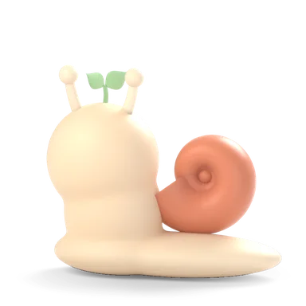
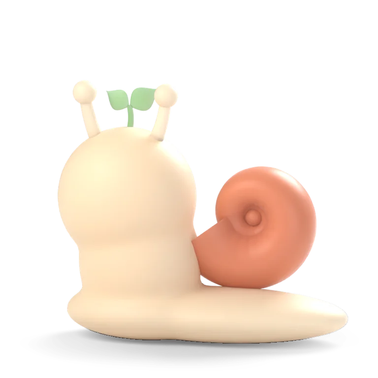
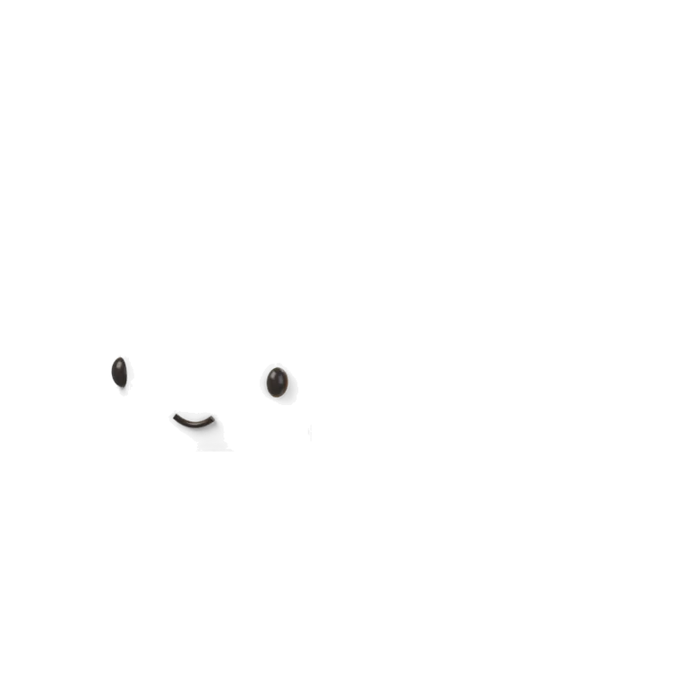
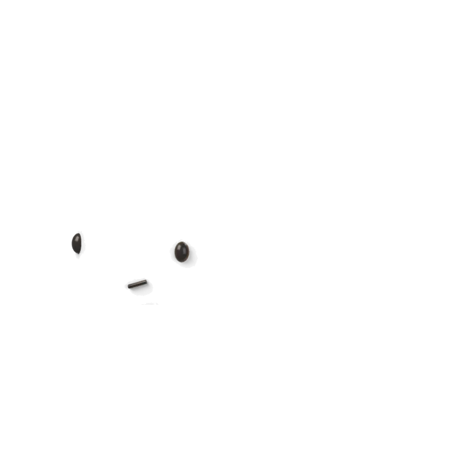
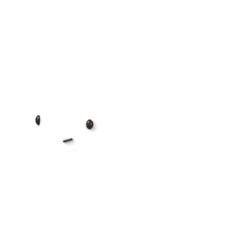
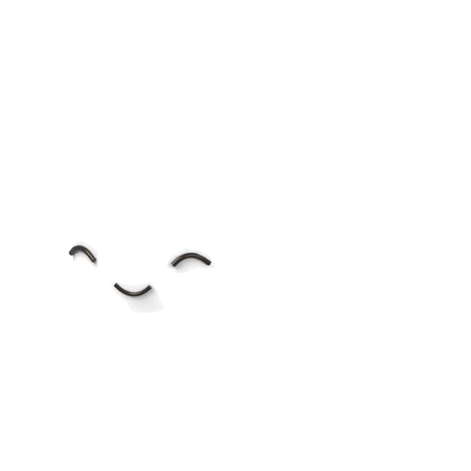

일기를 그만두는 이유는 대부분 의지가 아니라 마찰이다. 빈 종이, 느낌을 문장으로 옮기는 수고, 열고 저장하는 단계가 마찰이 된다(조사 §1). 그래서 꿈틀 일기는 쓰는 게 아니라 캐릭터에게 이야기하는 것으로 바꿨다. 기분 하나만 눌러도 기록이 되고, 몇 마디 나누면 느리가 내 말투 그대로 일기 한 장으로 옮겨 알아서 저장한다. 저장 단추는 없다.
일기 앱은 정신 건강 도구 가운데 오래 쓰는 비율이 가장 낮다. 첫 주에 열심히 쓰고, 2주째 줄고, 한 달 안에 멈춘다. 습관은 평균 11일째쯤 끊긴다. 아래 표는 불편 하나마다 그걸 가장 잘 푼 앱과 꿈틀의 답이다.
| 사용자가 겪는 불편 | 잘 푼 앱 · 방법 | 꿈틀 일기 |
|---|---|---|
| ① 빈 종이 — 뭘 쓸지 몰라 열었다 닫는다 | Reflectly 질문을 한 단계씩 · Rosebud 빈 페이지 대신 질문 · Apple 저널 사진·장소로 쓸거리 제안 | 느리가 먼저 말을 건다. 첫 질문은 오늘 데이터로("퀴즈2 끝냈네!"), 답 칩은 끝낸 할 일·일정에서 |
| ② 문장으로 옮기는 수고 — 지치고 힘든 날일수록 못 쓴다 | 마이모리 톡 보내듯 대충 써도 일기로 정리 · 들어주는일기 전화하듯 말로 · 사이다 AI가 대신 써 줌 | 메신저처럼 짧게, 칩, 말하기(기기 받아쓰기). 끝나면 느리가 내 말투 그대로 1인칭 일기로 옮긴다(느리 말은 빼고) |
| ③ 여는 것 자체 — 까먹거나, 앱 찾아 들어가기 귀찮다 | Daylio 알림 · 두 번 탭 · Finch 열면 바로 체크인 | 저녁 알림에서 바로 답장, 위젯에서 기분 바로 누르기(앱 안 열림). 열면 이미 대화가 시작돼 있다 |
| ④ 저장·정리 — 끝맺기·제목 붙이기가 일 | Rosebud 쓰다 만 글 자동 임시 저장 · Reflectly 끝에 축하 | 저장 단추 없음. 모든 말은 바로 저장, "오늘은 여기까지"나 앱을 떠나면 일기 한 장으로 자동 정리. 제목·태그도 느리가 |
| ⑤ 연속 기록 죄책감 — 끊기면 "어차피" | Daylio 놓쳐도 벌 없음(Finch 연속 압박과 대조로 호평) | 연속 숫자 없음. 며칠 만에 와도 "다시 왔네, 반가워". 새벽 4시까지 쓴 건 전날 일기로 |
| ⑥ 답을 기다리는 시간 — 우리 AI는 첫 글자까지 6~20초(실측) | 하루 AI 일기 친구·하루온기 캐릭터·목소리로 공감 | 보내는 순간 0.3초 안에 기기에서 끄덕임 + 내 말풍선에 하트, 생각하는 얼굴. 그동안 AI 답이 흘러나온다 |
| ⑦ 형식적인 AI — 조언·요약·보고서 말투 | How We Feel 감정을 고르는 방식을 좁혀 줌 · Stoic 질문이 좋음 (반면 Rosebud는 무겁다는 평) | 기존 대화 규칙 유지: 한 말을 그대로 짚어 알아주기, 묻지 않으면 조언 금지, "그냥 들어줘" 칩 |
캐릭터는 사용자의 정원 친구(예: 달팽이 "느리"), 장면은 지금 시간대(아침 dawn · 낮 day · 저녁 dusk · 밤 moon)를 따른다. AI 비서 채팅에서 만든 장면·받침·유리 말풍선을 그대로 쓴다.

느리지금오늘 할 일 4개나 끝냈네. 하루 어땠어?
③ 여는 것 자체가 귀찮다 → Daylio 알림 + iOS·안드로이드 알림 바로 답장
③ 여는 것이 귀찮다 → Daylio 두 번 탭을 홈 화면으로


① 빈 종이 → Finch 체크인 + Reflectly 기분부터

⑥ AI는 첫 글자까지 6~20초 → 기기에서 먼저 반응해 기다림을 덮는다
⑦ 형식적인 AI → 기존 대화 규칙(COMPANION_RULES) + 캐릭터 성격 카드
② 문장으로 옮기는 수고 → 들어주는일기(말로) + 마이모리(톡처럼)

느리가 일기로 옮기는 중…기업경제학 퀴즈를 생각보다 잘 봤다. 어제 늦게까지 붙잡고 있던 게 보람이 있었다. 미뤄 두던 교정 상담도 다녀왔는데, 2년이 걸린다고 해서
내가 한 말로만 옮겨요 · 느리의 말과 조언은 넣지 않아요④ 저장·정리가 일 → 마이모리 자동 정리 + Rosebud 자동 임시 저장

예쁘게 + ④ → 대화가 종이 한 장으로 접혀 내려앉는 순간이 보상
⑤ 연속 기록 죄책감 → 하루콩 기분 달력, 연속 숫자 없음
AI가 없어도 일기는 끝까지 써진다
| 순간 | 시간 | 무엇이 | 어디서 |
|---|---|---|---|
| 앱 열기 → 인사 | 0ms | 인사는 미리 그려져 있다(타자 효과 없음). 느리 숨쉬기 시작 | 기기 |
| 기분 누르기 | 120ms | 콩이 눌렸다 커짐(0.92→1.08→1) + 가벼운 진동. 내 말풍선으로 날아가 앉음 | 기기 |
| 보내기 | ~300ms | 키보드 내려감 · 내 말풍선 위로 · 하트 붙음 · 느리 끄덕 2번 → 생각하는 얼굴 | 기기 |
| 첫 글자 | 6~20초(실측) | 같은 말풍선에서 점 → 글로 바뀜, 프레임마다 흘러나옴. 얼굴 = 말하는 중 | AI(우리 서버) |
| 답 끝 | +0.8초 | 답이 따뜻하면 웃는 얼굴, 칩 줄이 아래에서 올라옴 | 기기 |
| 오늘은 여기까지 | ~20초 | 말풍선이 종이로 접힘(0.4초) → 제목·본문 흘러나옴 → 저장됨 ✓ · 깡충 | AI → 기기 |
| 움직임 줄이기 | — | 끄덕·깡충·접힘 없음, 얼굴만 바뀜. 글은 받은 대로 한 번에 | 기기 |
| # | 질문 | 추천 | 이유 |
|---|---|---|---|
| ① | 이 방향(대화 → 자동 일기 한 장)으로 갈까? | 간다 | 조사한 불편 7개를 한 흐름으로 푼다. 서버(대화·옮기기 스트림)는 이미 있어 바뀌는 건 휴대폰 화면과 알림·위젯 |
| ② | 알림 바로 답장 · 홈 위젯도 v1에? | 알림 답장은 v1, 위젯은 다음 | 알림은 이미 있는 푸시 + 답장 동작만 더하면 된다. 위젯은 iOS 위젯 확장(Swift)·안드로이드 위젯을 따로 만들어야 해서 크다 |
| ③ | 앱을 떠나면 자동으로 일기로 옮길까? | 옮긴다(5분 뒤, 하루 5번 안에서) | "끝내기"조차 귀찮다. 옮기기 한도를 넘으면 내 말 그대로 이어 붙여 저장 |
| ④ | 동의 카드를 없애고 처음 한 번 설정 화면으로? | 없앤다 — 첫 일기 전에 한 장 안내(나누기 / 나만 보기) | 대화 중간에 끊기는 단계가 제일 큰 마찰. 단 무엇이 서버로 가는지는 첫 장에 분명히 |
조사 출처 — 일기를 그만두는 이유(That Journaling Guy) · 글로 옮기는 인지 부담과 말로 쓰기(Yaps) · Reflectly 입력 흐름(GoodUX) · Rosebud 화면(ScreensDesign) · Rosebud 블로그 · 마이모리(App Store) · 들어주는일기(Google Play) · 하루 AI 일기 친구(Google Play) · 하루온기(App Store) · 사이다(디지털데일리) · How We Feel(ScreensDesign) · Finch 연속 압박 vs Daylio(Lifestack) · Daylio 분석(mHealth) · 하루콩 · Apple 저널 비평(Pratt) · Stoic 비교